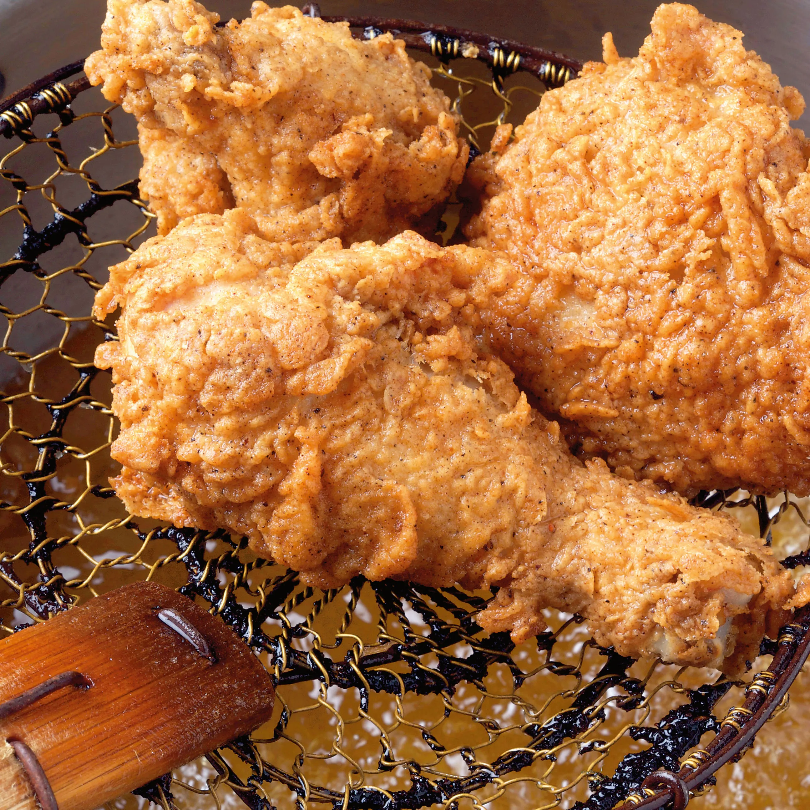

Deep fried chicken
Home

Description
This deep-fried chicken recipe features crispy, golden-brown skin with juicy, tender meat inside. The chicken is seasoned with a blend of spices, then coated in a seasoned flour mixture and fried to perfection. It's a delicious, classic comfort food loved by many.
Ingredients
- Chicken pieces (drumsticks, wings, or thighs)
- Flour
- Salt
- Black pepper
- Paprika
Steps
- Step 1: Heat oil in a deep fryer or large pot to 350°F (175°C).
- Step 2: In a bowl, mix flour, salt, pepper, and paprika. Coat the chicken pieces in the flour mixture, pressing gently to ensure it sticks.
- Step 3: Fry the chicken in the hot oil for 10-15 minutes, until the chicken is golden brown and the internal temperature reaches 165°F (75°C).